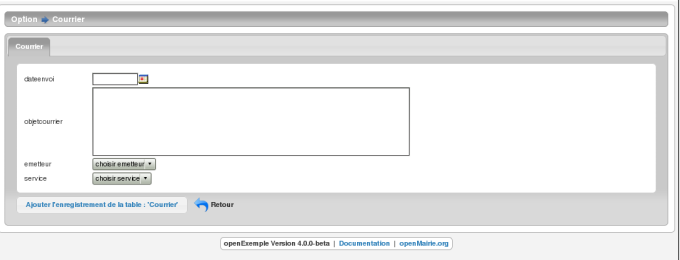
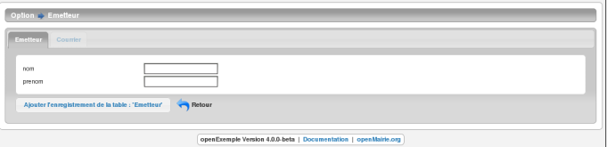
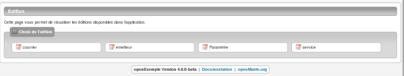
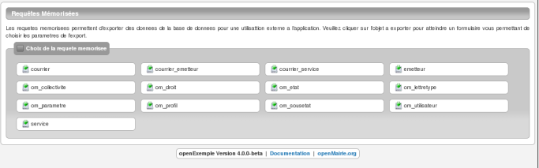

Créer les formulaires¶
Nous allons maintenant créer les formulaires à l’aide du générateur
Pour cela, il faut aller dans le menu administration -> generateur
Vous devez avoir 3 nouveaux boutons : courrier, service, emetteur

Avant de commencer, l’utilisateur apache (www-data) doit avoir les droits d’écriture dans les repertoires /gen , /sql et /obj
Générer les formulaires et édition du courrier¶
En appuyant sur le bouton de courrier, vous avez les choix de génération

Au préalable, le générateur fait une analyse de la base de données
Tables de la base de donnees
[ emetteur ] [ service ] et les tables om..
Table :
courrier
[ cle N - cle automatique ]
[ longueur enregistrement : 34 ]
Champs
[ courrier 8 int ]
[ dateenvoi 10 date ]
[ objetcourrier 65535 blob ]
[ emetteur 8 int ]
[ service 8 int ]
Sous formulaire
Cle secondaire
[ emetteur ] [ service ]
Le générateur a détecté 2 clés secondaires et aucun sous formulaire
C’est pour cela qu’il propose 3 “reqmo” : 1 “reqmo” global et 2 “reqmos” suivant la clé secondaire
Par défaut, 3 options sont cochées, ce sont les 3 fichiers fabriqués par le générateur
Cochez toutes les options
formulaire
courrier.inc.php ../gen/sql/mysql/courrier.inc.php
courrier.inc ../sql/mysql/courrier.inc
courrier.form.inc.php ../gen/sql/mysql/courrier.form.inc.php
courrier.form.inc ../sql/mysql/courrier.form.inc
courrier.class.php ../gen/obj/courrier.class.php
courrier.class.php ../obj/courrier.class.php
edition
courrier.pdf.inc ../sql/mysql/courrier.pdf.inc
reqmo
courrier.reqmo.inc ../sql/mysql/courrier.reqmo.inc
courrier_emetteur.reqmo.inc ../sql/mysql/courrier_emetteur.reqmo.inc
courrier_service.reqmo.inc ../sql/mysql/courrier_service.reqmo.inc
divers
courrier.import.inc ../sql/mysql/courrier.import.inc
En cliquant sur valider, vous avez le message
Parametrage utilise : standard
* ecriture fichier ../gen/sql/mysql/courrier.inc.php
* ecriture fichier ../sql/mysql/courrier.inc
* ecriture fichier ../gen/sql/mysql/courrier.form.inc.php
* ecriture fichier ../sql/mysql/courrier.form.inc
* ecriture fichier ../gen/obj/courrier.class.php
* ecriture fichier ../obj/courrier.class.php
->affichage colone ok 8,23529411765 >= 2.5
* ecriture fichier ../sql/mysql/courrier.pdf.inc
* ecriture fichier ../sql/mysql/courrier.reqmo.inc
* ecriture fichier ../sql/mysql/courrier_emetteur.reqmo.inc
* ecriture fichier ../sql/mysql/courrier_service.reqmo.inc
* ecriture fichier ../sql/mysql/courrier.import.inc
Le paramétrage utilisé est le paramétrage standard.
Vous pouvez le modifier : voir generateur/parametrage
L’affichage par colone est “ok”, ce qui veut dire que la taille des colones dans le fichier pdf sera complet. (attention le script ne prend pas le champ blob)
Générer les formulaires et édition de l’emetteur¶
Nous allons procéder de la même manière avec le bouton emetteur.
L’analyse de la base de données est la suivante
Tables de la base de donnees
[ courrier ] [ service ] et les tables om ...
Table :
emetteur
[ cle N - cle automatique ]
[ longueur enregistrement : 48 ]
Champs
[ emetteur 8 int ]
[ nom 20 string ]
[ prenom 20 string ]
Sous formulaire
[ courrier ]
Cle secondaire
Le générateur repère un sous formulaire courrier. Effectivement, il y a une relation de un à plusieurs entre emetteur et courrier : un emetteur peut avoir 0 à plusieurs courriers
En cliquant sur toutes les options, vous avez le message suivant
Parametrage utilise : standard
* ecriture fichier ../gen/sql/mysql/emetteur.inc.php
* ecriture fichier ../sql/mysql/emetteur.inc
* ecriture fichier ../gen/sql/mysql/emetteur.form.inc.php
* ecriture fichier ../sql/mysql/emetteur.form.inc
* ecriture fichier ../gen/obj/emetteur.class.php
* ecriture fichier ../obj/emetteur.class.php
->affichage colone ok 5,83333333333 >= 2.5
* ecriture fichier ../sql/mysql/emetteur.pdf.inc
* ecriture fichier ../sql/mysql/emetteur.reqmo.inc
* ecriture fichier ../sql/mysql/emetteur.import.inc
Générer les formulaires et édition de service¶
Nous allons procéder de la même manière avec le bouton service
L’analyse de la base de données est la suivante
Tables de la base de donnees
[ courrier ] [ emetteur ] et les tables om ..
Table :
service
[ cle N - cle automatique ] [ longueur enregistrement : 28 ]
Champs
[ service 8 int ]
[ libelle 20 string ]
Sous formulaire
[ courrier ]
Cle secondaire
Le générateur repère un sous formulaire courrier. Effectivement, il y a une relation de un à plusieurs entre service et courrier : un service peut avoir 0 à plusieurs courriers
En cliquant sur toutes les options, vous avez le message suivant
Parametrage utilise : standard
* ecriture fichier ../gen/sql/mysql/service.inc.php
* ecriture fichier ../sql/mysql/service.inc
* ecriture fichier ../gen/sql/mysql/service.form.inc.php
* ecriture fichier ../sql/mysql/service.form.inc
* ecriture fichier ../gen/obj/service.class.php
* ecriture fichier ../obj/service.class.php
->affichage colone ok 10 >= 2.5
* ecriture fichier ../sql/mysql/service.pdf.inc
* ecriture fichier ../sql/mysql/service.reqmo.inc
* ecriture fichier ../sql/mysql/service.import.inc
Integrer les formulaires dans le menu¶
Pour accéder à nos formulaires, nous allons les intégrer dans le menu ( voir framework/parametrage/menu gauche)
Nous allons appeller le formulaire depuis le menu :
option application -> tab.php?obj=courrier
option parametrage -> tab.php?obj=emetteur
option parametrage -> tab.php?obj=service
Il faut ouvrir avec un éditeur le fichier dyn/menu.inc.php et insérer le code suivant
// *** APPLICATION ***
// inserez ici les tables de votre application
array_push($links,
array(
"href" => "../scr/tab.php?obj=courrier",
"class" => "courrier",
"title" => _("courrier"),
"right" => "courrier"
));
// *** TABLES DE PARAMETRAGE ***
// inserer ici vos tables de parametres
array_push($links,
array(
"href" => "../scr/tab.php?obj=emetteur",
"class" => "emetteur",
"title" => _("emetteur"),
"right" => "emetteur"
));
array_push($links,
array(
"href" => "../scr/tab.php?obj=service",
"class" => "service",
"title" => _("service"),
"right" => "service"
));
Vous pouvez accéder à vos formulaires par le menu avec les options :
application -> courrier
Cette opération affiche la table courrier :

On accéde en appuyant sur + au formulaire d’insertion ou les champs sont :
- la date du courrier avec calendrier
- l’objet du courrier dans un champ textarea
- deux controles “select” pour le service et l emetteur

parametrage -> emetteur
Cette operation affiche la table emetteur :

En appuyant sur +, on accède à la saisie
L’onglet courrier est inactif tant que l’emetteur n est pas saisi et validé
parametrage -> service
Cette opération affiche la table service :

En appuyant sur +, on accede à la saisie
L’onglet courrier est inactif tant que le service n est pas saisi

Vous pouvez accéder aux éditions et requêtes mémorisées :
export -> edition
Cet option affiche l’ensemble des éditions pdf :
pour en savoir plus voir framework/edition
export -> reqmo
Cette option affiche les requêtes mémorisées :
pour en savoir plus voir framework/reqmo
Vous pouvez accéder aux éditions en appuyant dans le formulaire d’affichage sur l’imprimante
Vous pouvez accéder au fichiers d’import
administration -> import
Cette option affiche les scripts d’imports :

pour en savoir plus voir framework/import